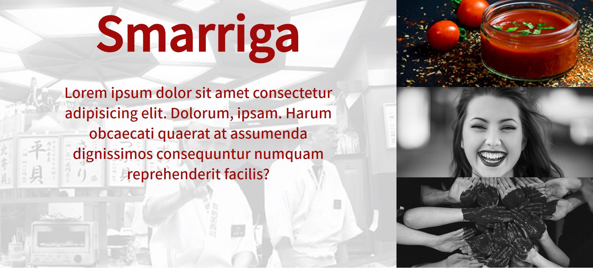
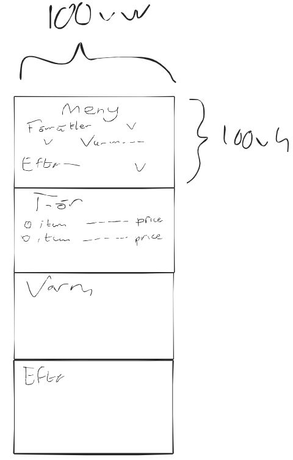
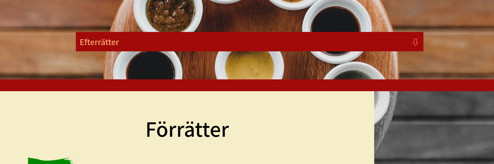
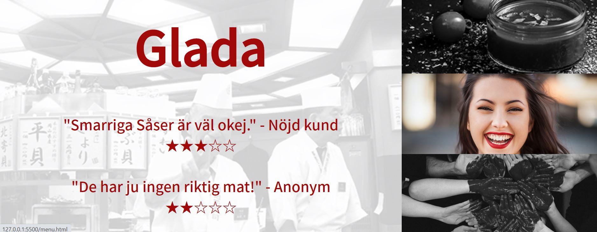
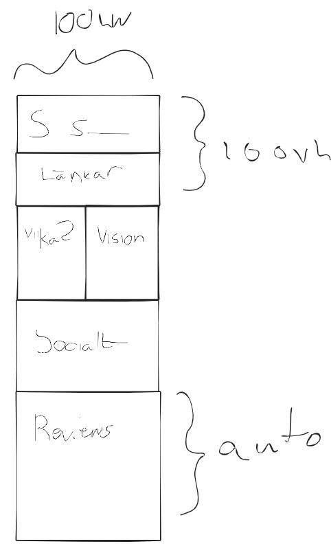

Jag ska göra en ny variant av min första Smarriga Såser-sida. Målgruppen är främst den yngre befolkningen, som är mer äventyrlig och villig att testa något nytt - som våra spännande såser. Däremot är restaurangen såklart öppen och välkomnande för alla.
Jag gjorde en hel sida om Smarriga Såser innan denna. Lite bilder på första sidan:


Min främsta lärdom från denna sida var att det ser omodernt och nästa lite barnsligt ut när all bakgrund är enfärgad. Därför satsar jag i den nya sidan på att använda bilder som bakgrund och liknande. Medan jag utvecklade denna sida lärde jag mig lite nya tekniker, som hur man gör att text syns över en bild när man hovrar över den, samt hur man länkar till en bild av en google maps location.
En annan grej jag insåg under arbetet med denna sidan var att det var väldigt svårt att byta color theme på sin sida efter att i början ha valt sina huvudfärger - för att byta var jag tvungen att ändra varje förekomst av färgerna. Detta lärde jag mig ett knep för att motverka, som jag använde mig av i andra sidan: Om man i början av sitt css-dokument har
* {
--color1: #000000;
--color2: #abcabc;
}
Kan man senare använda sig av var(--color1); istället för att skriva in hex-koden. Detta gör att man kan ändra alla förekomster genom att endast ändra denna första variabeldeklaration.
Denna sidan finns tillgänglig på GitHub. Den slutgiltiga sidan ligger i en annan branch.
| Vecka | På lektionen | Utanför lektionen |
|---|---|---|
| 47 | (Denna veckan gick åt att göra första versionen av sidan) | |
| 48 | Skissa och planera sidan. Bestämma upplägg. Skriva planering. Kom på idé om min img-grid: En stor bild är konstant i gråskala med opacity. Små bilder vid sidan kan hovras över och blir då av med filtret samt visar text på stor bild. | Färdigställa planering. Börja arbeta på "stammen" (det som är samma på varje sida) |
| 49 | Färdigställa stammen. Göra index.html-sidan. Börja på övriga sidor. | Göra färdigt övriga sidor. |
| 50 | Försöka få respons av någon på sidan. Testa sidan. Skriva om utefter respons och tester. | Avsluta allt. |
Idag skapade jag GitHub-konto och forkade projektet. Jag började skissa på idéer.
Idag bestämde jag mig för att börja om projektet, i och med att jag under veckan gjort en färdig sida som saknade dokumentation. Den nya sidan bygger på den gamla (samma resaturangidé ... ) men ska förhoppningsvis bli bättre.
Efter lektionen har jag fixat javascript samt bilder för cool effekt med bildgrid. Det var väldigt krångligt då jag inte är så erfaren med javascript, men löste sig till slut. Till nästa gång jag gör något liknande bör jag tänka på att inte göra en funktion som kallar en annan funktion som motverkar det den första funktionen gör... Dessutom bör jag tänka på att låta mina element vara variabler istället för att skriva ut document.getElementById(id) varje gång...
Jag började med att göra färdigt index-sidan. Jag bestämde mig för att simplifiera ner den rätt rejält från min skiss, då det blev lite för klottrigt annars.
Jag skissade på menu-sidan, och började koda på den:
Jag tänker mig att det ska kunna länka från landing till längre ner i sidan, till avsnitten för-, varm- och efterrätter.
Efter lektionen satt jag mycket med meny-sidan. Jag stylade sidan på en del olika sätt. Jag ville väldigt gärna att bakgrunden skulle övergå från att vara färgad till svartvit, för att dra fokus till bakgrunden på landing page men till menyerna sedan när användaren scrollat ner. Detta lyckades jag till slut fixa med hjälp av att kombinera en svartvit linear-gradient med den vanliga bakgrunden i de områden där jag ville ha svartvit bakgrund. För att övergången inte skulle bli ful la jag till en enfärgad div mellan de två bakgrundsareorna.
När jag nu hade flera olika sidor som skulle använda olika javascriptfunktioner var jag tvungen att ändra om lite där. Jag bestämde mig för att ha en "index.js", där koden endast index.html använde låg. Sedan en menu.js.. Eftersom bägge använde sig av navbar-funktionerna skapade jag en tredje fil "navbar.js" för denna.
Att få länkarna i landing page i menu.html att scrolla exakt till respektive meny visade sig vara en utmaning. Eftersom navbaren skymde övre delen av menyn om jag scrollade exakt till startpositionen av diven var jag tvungen att komma på en annan metod. Till slut insåg jag att istället för att använda a-taggar kunde jag lägga till onclick-funktioner i länkarnas divar, och därmed med javascript bestämma exakt vart sidan skulle scrollas vid klick (vilket var startpsitionen minus navbarens höjd).
Jag la till riktig text i första-sidan. När det var reviews ville jag att de skulle formateras på ett visst sätt, med line breakes mellan. Jag var därför tvungen att ändra om javascriptfunktionen så att den tog innerHTML istället för textContent, så att även formatering sparades.
Jag började skissa på about-sidan:
Härnäst kodade jag och stylade about-sidan. Jag avvek lite grann från skissen, men grunden är densamma.
Idag fortsatte jag med about-sidan. Jag gjorde en social-media-länkning med minimalistikoner som blev rätt snygg. Det var svårt att få till så att länkarna endast var från arean av den rundade diven som innehöll loggan, men jag lyckades lösa det till slut genom lite display: flex på alltid, och width: 0 på länkarna.
Jag uppdaterade loggan så att den skulle se lite snyggare ut. Jag är fortfarande inte nöjd men jag tror att nuvarande versionen får duga.
Jag validerade min kod och upptäckte att jag missat en hel del alt-taggar på bilder, så jag fixade detta.